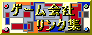

ゲームソフト通信販売！明日届きます！
| HAMAOKA Taro | |
|---|---|
| 2000年9月30日土曜日 | |
|
今回の「国語審議会」の「敬意表現」「表外漢字」「日本語の国際化」の検討結果の内「日本語の国際化」の中の「日本人名のローマ字表記」。 「姓-名の順が望ましい」、前から日本語の順番で姓-名で表せばいいとか言う話は聞いたことがあったけど、こうやってはっきり発表されたのは初めてなのかな? 最近では国際的にもこういう考え方が一般的になってきたのか? 今回シドニーオリンピックを見ていて気になったことがあった、それがこの姓名の順番。 野球を観ていると「タグチ、ソー!」と姓-名の順番でコールしていた、もしかしてオリンピックでは全部そのように統一されているのか? と思って他の競技を観るとそうでもない、名-姓の順番でコールされている競技もある。 この辺は統一した方が良いと思うけど。 個人的にはやっぱり姓-名が良いね。 で、その姓-名の書き方、[HAMAOKA Taro]の様に姓だけをすべて大文字で表すそうだ。 ところでこうやって書く時ってTarouと書くべきなのか?TaroとかTarohとか書くのか? どうなんだ？
シンクロ団体、銀メダルおめでと〜。 |
| ハングアップ | |
|---|---|
| 2000年9月29日金曜日 | |
|
26日からドラクエ7を初めて今まで順調だったものの遂にハングアップを経験してしまった。 ドアを開けて中に入ったら、画面が暗いままで音楽が止まった。 「あー、ハングった。」 1つイベントをクリアしてセーブポイントも間近だったのに。 ドラクエ7おもしろいんだけど、ハングアップをビビリながらやらないといけないのはちょっと。 それと、前評判通り画面の切り替えは速いんだけど、それだけに唯一遅い、戦闘終了からフィールドに帰る部分がすごく気にかかる。 まあ、楽しんでますけどね。
金メダル、5個。 |
| 222222突破 | |
|---|---|
| 2000年9月28日木曜日 | |
|
220000ヒット突破、報告が遅れている間に222222も突破、掲示板に書き込みももらいありがどうございました。 ここ最近はまた500ヒット越えることも多くなりうれしい限りです。 夢の1日1000ヒットする日が来るのやら。
永田克彦選手、銀メダルおめでと〜。 |
| ドラクエ7開始 | |
|---|---|
| 2000年9月27日水曜日 | |
|
発売日の8月26日に購入するも期末試験のために封すら切らないでいたドラゴンクエスト7、ちょうど1ヶ月遅れの9月26日から始めました。 流石に遅いーっと悩まされることはあまり無い、僕としては階段の音が無くなる前でも、教会の祈りの音楽が無くなる前でも、どんどん次に進めてくれた方がスピーディーでうれしかったんだけど、まあ良いか。 まだ始めたばかりだから分からないけど今のところは例のハングの症状は現れていない、意識していつもより頻繁にセーブはしているのだが。 秋休みはだらだらとドラクエ7やって過ごします。
ソフトボールチーム、シンクロデュエット(立花美哉・武田美保組)、銀メダルおめでと〜。 |
| 期末試験終了 | |
|---|---|
| 2000年9月26日火曜日 | |
|
期末試験最後のテストは問題が3問紙3枚配られたテストだったが、内一枚は白紙、大丈夫だろうか。 とにかくこれで期末試験が終わり、秋休み、どうしましょう、また秋休みの間、1日1リンクにしようかな。 これでドラクエ7をやっと始められる。
金メダル、5個。 |
| 読売巨人軍リーグ優勝 | |
|---|---|
| 2000年9月25日月曜日 | |
|
M1になってから試合終了前後は見ていたんだけど、今日は9回になって4点差だったから寝ようと思ってた。 まあ、もしかしたらって事で見ていたらあんな風に決着が付くとは、いやほんっとびびった。 0-4から満塁ホームランで同点に追いつき、次の打者がさよならホームラン、凄すぎ。 ではでは、日本シリーズを楽しみにしております。
高橋尚子選手、金メダルおめでと〜。 |
| アルファインターネット | |
|---|---|
| 2000年9月24日日曜日 | |
|
現在僕が使っているISP。 姉も同じISPを使っていて以前、繋がらないと言うことが何度かあったらしい、その後話しを聞かないがどうなっているのか。 今まで僕の使っている甲府アクセスポイントではそのようなことはなかったのだが、22日23:30頃から4:00くらいまで試して全然接続できなかった。 テストが一段落し、WinMeもインストールしたのでのんびりインターネット上をまわろうと思っていたのにひっじょうにタイミングが悪い。 WinMeをインストールしたことが原因で接続できないのかとも思ったが、23日11:00頃もう一度トライしたところ接続できたので原因はやっぱりISPらしい。 ここのISPはフレッツISDNに対応していないから僕がフレッツISDNに入る11月には他のISPと契約する予定、なんとかそれまで頑張って欲しい。 あとでISPのwebサイトを見たところ、認証サーバのダウンで22日23:00頃から23日3:30頃まで使えなかったことが判明、その時間帯に使えなくなるのは勘弁し欲しい。
女子４００メートルメドレーリレー(中村、田中、大西、源選手)、銅メダルおめでと〜。 |
| WindowsMeインストール | |
|---|---|
| 2000年9月23日土曜日 | |
|
22日16:50に宅急便でWindowsMeが到着。 早速約1時間かけてインストール、無事上書きインストール完了。 とりあえずはインストールしたと言うことで違いはこれから感じていこうかと。 今のところは色々な部分で色が変わってちょっと違和感ありです。
篠原信一選手、銀メダルおめでと〜。 |
| WindowsMe | |
|---|---|
| 2000年9月22日金曜日 | |
|
待ちに待ったWindowsMeの発売日。 期末試験もあと月曜日の1つとなりその1つも何やっていいのかわからないから勉強する予定無いので早速、購入後インストールする予定。 まずはインストールの準備にデータのバックアップ取らないと。
井上康生選手、金メダルおめでと〜。 |
| ワンダースワンカラー | |
|---|---|
| 2000年9月21日木曜日 | |
|
発売日が12月9日に決まり、同時発売のファイナルファンタジーとともに楽しみ。 後はこのまま発売日に予定通り発売されることを祈るのみ。 初のハード発売日購入まであと、2ヶ月半。
金メダル、3個。 |
| ドラゴンクエスト3 | |
|---|---|
| 2000年9月20日水曜日 | |
|
ドラゴンクエスト3がゲームボーイカラーで発売されるみたい。 モンスターメダルとか言うのがあってモンスターを倒すと手に入って、通信ケーブルを使って交換可能。 交換する相手がいたらちょっと楽しそう。 でも、ちょっと前だったら買っていたけど、今は別にいいやって感じ。 ゲームボーイカラー買って以来全然使っていないなあ、ゼルダで使うと思って買ったんだけど、このまま行ったらアドバンスの方が先に発売されちゃいそう。 ゲームボーイカラー、友達の家でしっかり働いているかな、僕の数百倍使ってるよ君、だって僕の総プレー時間1時間も行ってないもん。
瀧本誠選手、金メダルおめでと〜。 |
| mp3プレーヤー | |
|---|---|
| 2000年9月19日火曜日 | |
|
mp3プレイヤー買いたいって思っているんだけど、なかなか安くて思った通りの製品がない。 記録メディアはCDかHDD、容量はある程度欲しいんだよね。 CDの方はCD-Rに焼いたCDをどこまで読み込みミスを起こさずに読み込めるか、車でMD聴いていると音飛びがたびたび起こって気になるんだけど、CD-Rだとどれほどなのか。 HDの方は音飛びはないから良いけど、メディアをパッと入れ替えて違う音楽を聴くって事ができないのがちょっと。 プレイリストを幾つか突っ込んで置いてその中から選べるって機能が付いていればこれで決まりなんだけど。 どっちにしろ、まだ数が出ていないからまだまだ待ちかな。
中村真衣選手、銀メダルおめでと〜。 |
| 期末試験 | |
|---|---|
| 2000年9月18日月曜日 | |
|
今日から期末試験後半戦開始、シドニーオリンピックで集中力半減。 (元々ろくに集中していないから集中力ほぼ0) とっとと終わらせて楽になってドラクエやりたいわ。 まずは今日の5限から後半戦開始。 この大学入って初めて5限なんて時間に大学行くことに。
楢崎教子選手、銀メダルおめでと〜。 |
| ゴルゴルゴルゴルゴルゴルゴルゴルゴルゴルゴルゴルゴルゴルゴルゴルゴルゴルゴルゴルゴルゴルゴルゴルゴルゴルゴルゴール! | |
|---|---|
| 2000年9月17日日曜日 | |
|
15日に開幕したシドニーオリンピック。 田村亮子選手、野村忠宏選手金メダルおめでと〜。 田島寧子選手、銀メダルおめでと〜。 は、良いんですけど、14日のサッカー南アフリカ戦、船越アナウンサーの「ゴルゴル(中略)ゴルゴール!」、聞いていてすっごく不快に感じたんですけどこれ僕だけじゃなかったんですね、良かった。 日本テレビに150件、NHKに250件の抗議が殺到したそうで、2チャンネルでも批判されまくりだそうで。 僕としては普通の(?)、「ゴ〜〜〜〜〜〜〜〜〜〜〜〜〜〜〜〜〜〜〜ル!」ってやつもあまり長すぎるのは気になるんですが、どうですか? |
| レポート | |
|---|---|
| 2000年9月16日土曜日 | |
|
大学の演習の授業で出されている、レポート課題がとてもまともに完成させることができそうもないので、締め切りギリギリに提出して、なんとか通過しようかと。 レポート書いていて自分で何を書いているのか意味不明だからこれを読まされる先生にとってはさらに訳の分からないものになっているんだろうな。 僕、プログラマには向いていないかも。 |
| WindowsME発売 | |
|---|---|
| 2000年9月15日金曜日 | |
|
OEM版の発売日、秋葉原の店では0時発売する店もあるみたいですから、もう手に入れた人もいるのでしょうね。 僕は22日16時のWin98/SEからのバージョンアップ版を購入予定、ちょうど一週間後っすね、楽しみです。 |
| shockwave | |
|---|---|
| 2000年9月14日木曜日 | |
|
shockwaveの日本語公式サイトが立ち上がったみたいですがゲームとか、eカードとか色々あってよさげです。 常時接続になったらのんびり見てみたい感じのサイト。 ひっさしぶりにテトリスやりました、はい。 jp.shockwave.com |
| SMTPサーバ | |
|---|---|
| 2000年9月13日水曜日 | |
|
昨日いつも使っているSMTPサーバダウンしてメールが数時間送れなかった。 原因は、多大な要求に耐えられなくてダウンしたらしい、そこで、スパムメールなどを防ぐためにPOPパスワードを使った認証形式に変更を検討しているらしい。 この方法初めて知ったときには、面倒だなーと人ごとだと思っていたが場合によっては年内にもそうなるらしい、メール送信のたびにメールをチェックするのは面倒だ。 |
| フレッツISDNの値下げ検討 | |
|---|---|
| 2000年9月12日火曜日 | |
|
先日のフレッツISDNのサービス地域に甲府市が含まれたことと言い良いニュースが続いてます。 これも先日書いたフレッツADSLの値段設定と釣り合いをとるためにフレッツISDNを3000円台に値下げする事を検討していると。 仮に3500円とすると、現在のテレホーダイ2400円+甲府市内で一番安いプロバイダ料金980円で3380円。 フレッツISDNに変更して月3500円に一番安いプロバイダが450円で3950円。 凄いなあ、570円多く出すだけで、昼間っから使いまくれるなんて、良い感じだ。 と言うよりフレッツADSLと釣り合いをとるってじゃあINSテレホーダイの2400円ってなんだよ。 実家なんて法人登録だからINSテレホーダイだけで5000円近く取られてるぞ。 電話目的にテレホーダイ契約している人なんているのか? |
| 期末試験 | |
|---|---|
| 2000年9月11日月曜日 | |
|
最悪です、今日から2週間期末試験で気分最悪です。 試験終了後の秋休み目指してなんとか耐え抜きます。 秋休みになったらまた1日1リンクやります。 |
| ADSL | |
|---|---|
| 2000年9月10日日曜日 | |
|
NTTが否定的だったADSLに本格的に乗り出すようですが、やっぱりまずは東京区内と大阪市内、前のフレッツISDNと同じような状態でしょうか、甲府市ではやっと11月からフレッツISDNのサービスが開始されるというのに。 ちょうど1年遅れてます、甲府市。 |
| ファイナルファンタジー1・2・3 | |
|---|---|
| 2000年9月9日土曜日 | |
|
ワンダースワンカラー版のファイナルファンタジー、まだ画像を見たことがなかったが今回電撃王10月号で初めて見た。 感想は、凄い、さらに買うことを固く決意。 今までのシリーズとは違ってグラフィックが綺麗になっている、記事を読むとサウンドも綺麗になっていたり、ダッシュ機能が付くなど、古いゲームならではのストレスも感じずにやることができそう。 ワンダースワンカラー、初めてハードを発売日に買うかもしれない。 |
| フレッツ・ＩＳＤＮ | |
|---|---|
| 2000年9月8日金曜日 | |
|
やったやった、遂に我が甲府市がフレッツ・ISDNのサービス対象地域になった。 受付開始は11月1日の9:00から もう2ヶ月切ってるよー、楽しみだ期待だ早く来ないかなー。 …ところで、11月1日に申し込んで実際に使えるようになるのはいつになるのだろうか。 |
| 劇空間プロ野球AT THE END OF THE CENTURY 1999 | |
|---|---|
| 2000年9月7日木曜日 | |
|
3月31日の発売予定から延びに延び、やっと発売にこぎ着け。 しっかし、1999年バージョンじゃあねえ、と思っていたら既に受注数が60万本を越えているそうで最終的には100万本を越えてくるのでしょうか。 2000年バージョンだったらどうなっていたのやら、2000年バージョンだったら僕も買っているし。 では、次回作に期待してます。 |
| 期末試験 | |
|---|---|
| 2000年9月6日水曜日 | |
|
来週月曜日から期末試験、試験以外にも大変な課題が2つ残っている。 しかし、やる気が全然起きない、なんとかならんものか、このまま試験前日に泡を食うことになりそう。 |
| ロジクール製 コードレスキーボード | |
|---|---|
| 2000年9月5日火曜日 | |
|
僕はこのキーボードを使っているが、以前漁業用無線と干渉する可能性があると言う理由から無償交換をするというニュースを聞いたとき、自分のキーボードは違うだろうと思って、確認はしなかった。 今回、友達とこの話になったのだがさっき念のためロジクールのサイトに行ってP/Nを確認したところ自分のキーボードが見事に対象商品と合致していることに初めて気が付いた。 送料も含めて全てロジクールの負担で交換してくれるらしいのでせっかくだから交換してもらおうかと。 ユーザー登録カードを確認してみると購入日は99年1月30日となっている、もう1年半も経っているのだからただで新しいものと交換してもらえるのならこんな良いことはない。 ただキーボードが無くなってはパソコンが使えないので今度秋休みに実家に帰る直前に手続きをしようかと。 |
| CATVインターネット | |
|---|---|
| 2000年9月4日月曜日 | |
|
実家のCATVインターネットの概要が見えてきた。 月3000円は良いのだが回線速度が256kbpsとCATVインターネットとしては一番遅いレベルのスピード。 安いと思っていた月3000円もこれなら普通に思える。 それでも今の64kbpsよりは速くなるし何よりも常時接続は魅力。 |
| 東西NTT | |
|---|---|
| 2000年9月3日日曜日 | |
|
前々から常時接続にあこがれている僕はNTTのフレッツISDNには注目している。 今回NTT西日本はすべての県庁所在地にフレッツISDNを対応させるようだが僕の住んでいる甲府市はNTT東日本の管轄、まだまだ夢の常時接続は先の先のようだ。 |
| 210000突破 | |
|---|---|
| 2000年9月2日土曜日 | |
|
もうこのところなんの変化も無しです。 とりあえず報告。 |
| バナー | |
|---|---|
| 2000年9月1日金曜日 | |
|
このホームページの常連さんのみゆさんがバナーを作ってくれました。  http://www.gamelink.jp/png/gamelink.png http://www.gamelink.jp/jpg/gamelink.jpg http://www.gamelink.jp/gif/gamelink.gif 92×35 背景の色は歴代のゲーム機の色を表していて、四隅はボタンを表しているそうです。 なるほどー、そういう風に考えて描くことができるのは流石でしょうか、次回は得意なバカ絵の入ったバナーお願いします。 |